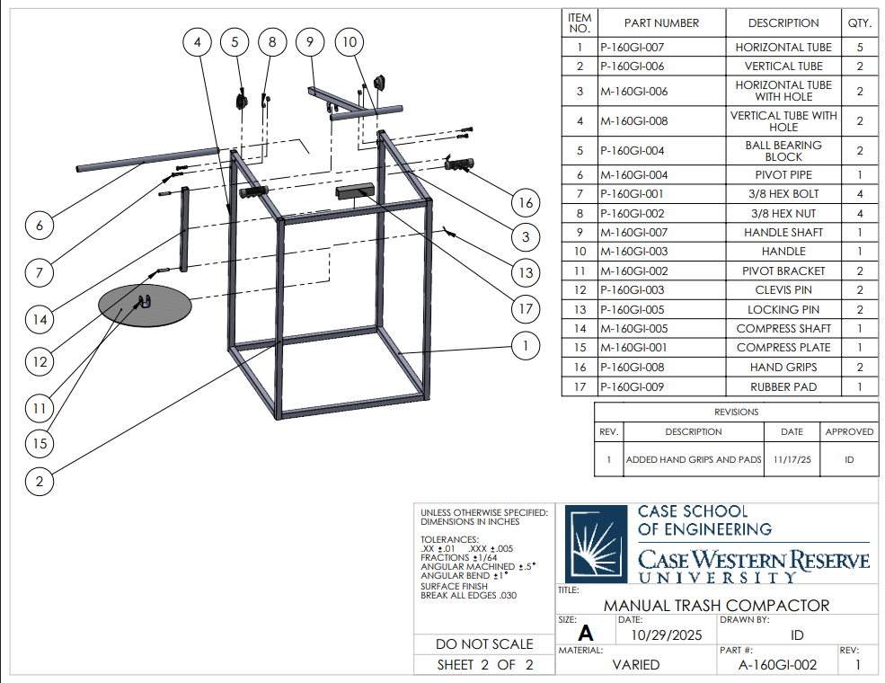
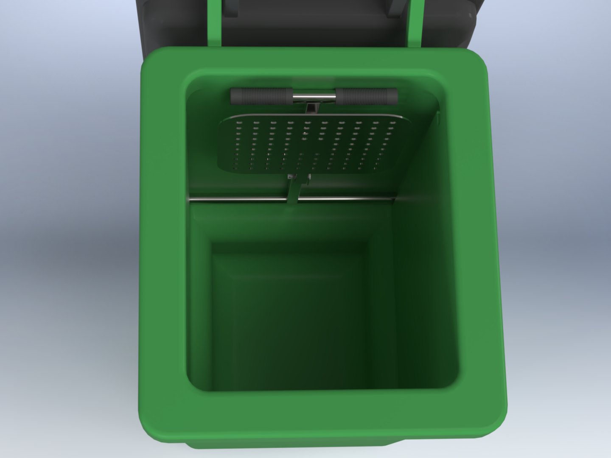
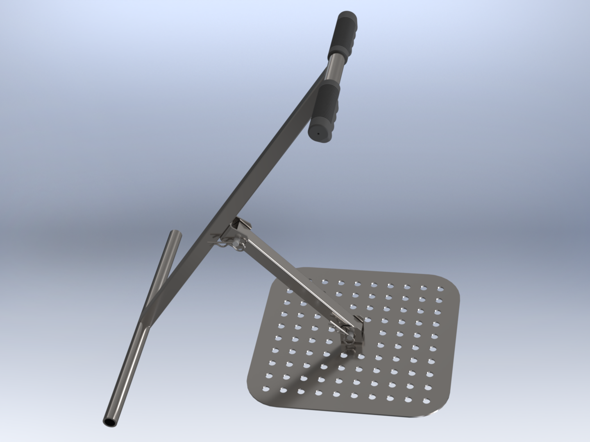

Project Overview
For this academic project, I led a four person team to design a commercial manual trash compactor, from concept through production-ready drawings and renders. The assignment called for a design optimized around Design for Manufacturing (DFM) principles and cost effectiveness for commercial production, rather than a one-off prototype.
Engineering Process
Team Leadership: Cooperated with my team through the full design cycle: establishing requirements, dividing CAD and drawing responsibilities, and coordinating toward a shared assembly and drawing package.
Analysis: Performed compression force calculations to size the mechanical advantage of the compaction linkage, ensuring the manual mechanism could generate sufficient force within a reasonable operator effort.
Design for Manufacturing: Applied proper fits and tolerances, weld symbols, and sheet metal design principles throughout, keeping every part producible with standard commercial sheet metal and fabrication processes.
Documentation: Produced 25+ fully dimensioned engineering drawings, including assemblies, bills of materials, and detailed part drawings, then ran motion studies in SolidWorks to validate the compaction mechanism before finalizing commercial renders.
Results
The final deliverable was a complete, production-ready design package: drawings, BOMs, and validated motion studies, suitable for handoff to a commercial manufacturer, along with polished renders to communicate the concept to nontechnical stakeholders.



Key Takeaways
Leading a team through a DFM project shifted how I think about CAD, as not just finishing a part in SolidWorks, but making sure it can actually be made. Likewise, drawing tolerances, dimensions and weld callouts make it manufacturable by a third party. Running motion studies before finalizing drawings caught an interference in the compaction linkage and helped shape the final design, preventing what would have been a costly mistake in a real production environment.
This project reinforced the value of dividing work clearly across a team while still creating a single, coherent drawing package at the end, as well as the importance of communication across subteams. This is something I have taken with me in other projects.